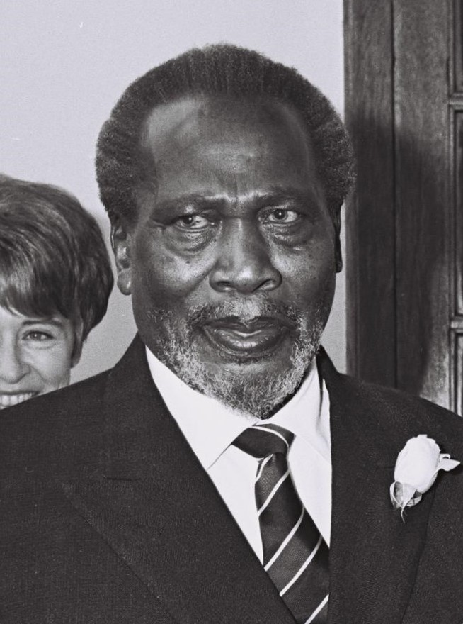

Jomo Kenyatta[a] CGH (c. 1897 – 22 August 1978) was a Kenyan anti-colonial activist and politician who governed Kenya as its Prime Minister from 1963 to 1964 and then as its first President from 1964 to his death in 1978. He played a significant role in the transformation of Kenya from a colony of the British Empire into an independent republic. Ideologically an African nationalist and a conservative, he led the Kenya African National Union (KANU) party from 1961 until his death.
 go to landing page go to education page